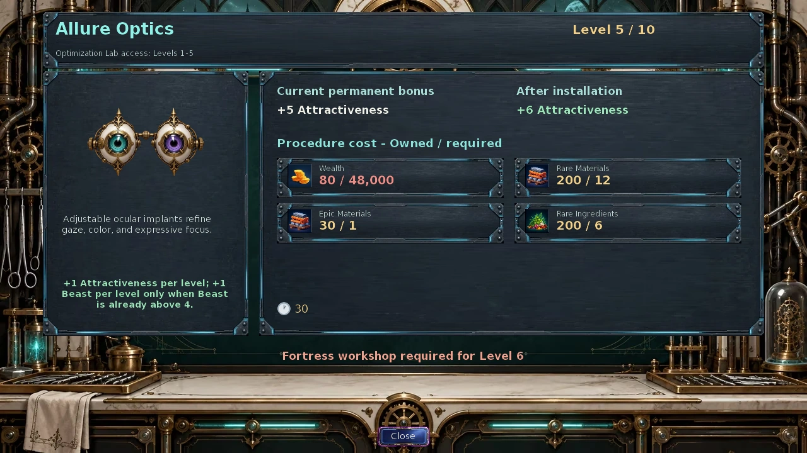
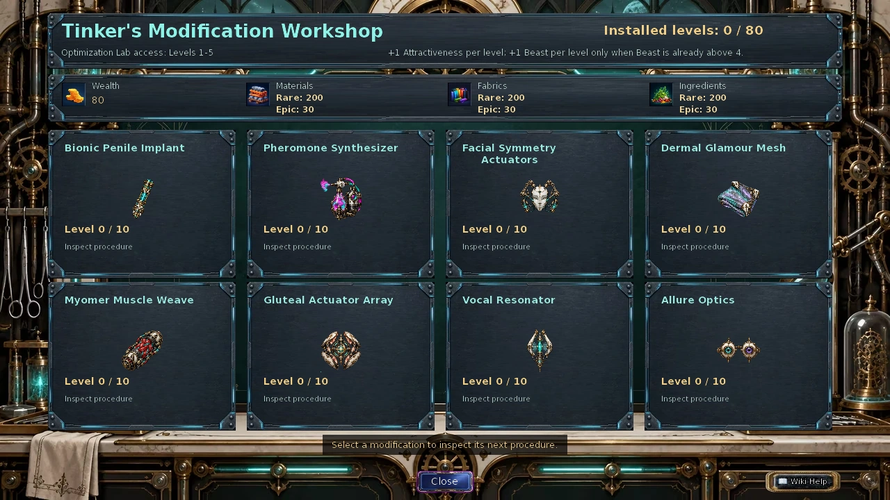
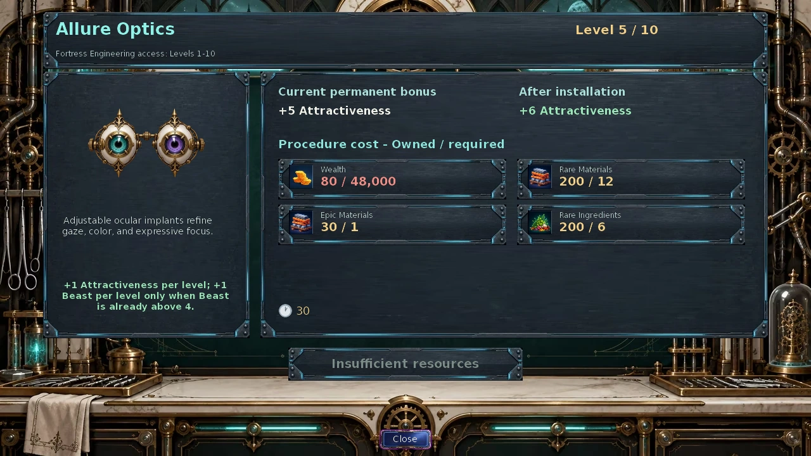
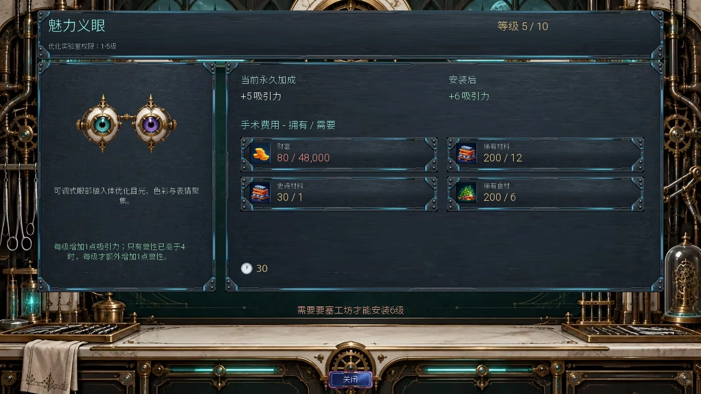
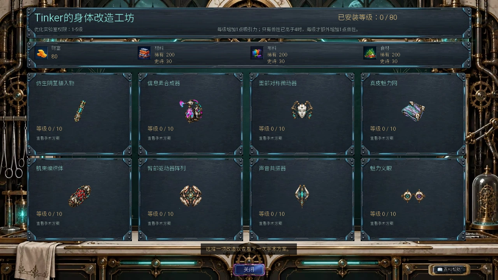
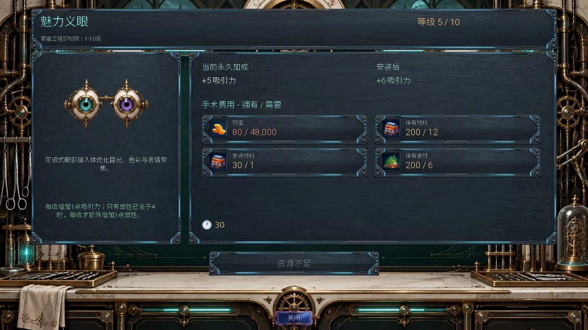

Select a screenshot to enlarge it. Screens show example inventories and progress.
What the workshop changes
Tinker offers eight permanent modification tracks, each with ten levels. Every installation adds +1 Attractiveness; the complete catalogue has 80 purchasable levels. The descriptions give each procedure its own theme, but all eight award the same stat increase. A muscle-themed modification does not add a separate Strength or combat bonus.
Start at the Human Performance Optimization Lab in the Future Fringe Zone, shown as Enhancement Center on the map. This workshop installs levels 1–5. Tinker’s evening workshop at Fortress Engineering installs levels 1–10. Both use the same progress.
Inspecting the menu is free. Each successful installation costs 30 in-game minutes, plus its listed Wealth and crafting resources. There is no downgrade, refund or reallocation option, so check the next procedure before buying.
Finding Tinker
| Workshop | When Tinker is available | Installation limit |
|---|---|---|
| Optimization Lab, Future Fringe Zone | All day before I Have Hands; before 18:00 afterward | Level 5 per track |
| Engineering, Fortress | 18:00–24:00 after I Have Hands | Level 10 per track |
Choose Body Modification Workshop in Tinker’s Skills actions. The workshop needs only the basic Stranger relationship stage and Tinker’s presence. Her Cybernetics lesson, Time-Tech Integration and Modification Aesthetics reward are separate actions.
Opening the Fortress workshop
Operations Center access opens after main story beat 31, through Cid’s clinic; Engineering is reached from there. Tinker’s own move requires I Have Hands. That scene becomes available at the Lab from 08:00–18:00 after story beat 35, Neutrality Has Teeth, the No Factory Reset heart-to-heart, and Romantic or higher relationship. Follow Tinker’s route if one of those steps is missing.
The Lab never installs level 6, even if you have enough resources. At level 5 it directs you to the Fortress workshop; this is a location limit rather than an affection or ingredient requirement.

The eight modification tracks
Each track consumes two ordinary crafting-resource families. “Primary” and “secondary” determine the quantities in the price table; they do not mean different rarity tiers.
| Modification | Primary resource | Secondary resource |
|---|---|---|
| Bionic Penile Implant | Materials | Fabrics |
| Pheromone Synthesizer | Ingredients | Fabrics |
| Facial Symmetry Actuators | Materials | Ingredients |
| Dermal Glamour Mesh | Fabrics | Ingredients |
| Myomer Muscle Weave | Ingredients | Materials |
| Gluteal Actuator Array | Fabrics | Materials |
| Vocal Resonator | Materials | Fabrics |
| Allure Optics | Materials | Ingredients |
The Lab and Fortress offer the same eight tracks. The Fortress extends their level limit; it does not introduce another catalogue. Your wallet needs Rare and, at higher levels, Epic resources. Common crafting stock, mining ingots, Components and Reclamation materials do not substitute for these charges.

Permanent bonuses and Beast
One installation gives +1 Attractiveness, whatever the track or target level. One complete track gives +10, and all eight from scratch give +80. The next level costs more without increasing that level’s stat reward.
An installation also gives +1 Beast only when Beast is already at least 5 and its access eligibility is valid. Body modifications do not activate Beast. Purchases at Beast 0–4 still give Attractiveness, but do not create Beast credit to claim later. A full set gives +80 Beast only if you qualify for that reward at every purchase.
Progress is shared between workshops and saved with your character. Visiting the other location does not duplicate rewards. These are personal-stat procedures; Tinker’s turret research, Army Armor and other Fortress upgrades have separate costs and effects.
Exact installation prices
Use the two resource families listed for your chosen track. Every installation in this table also takes 30 minutes.
| Target level | Wealth | Rare primary | Rare secondary | Epic primary | Epic secondary |
|---|---|---|---|---|---|
| 1 | $1,500 | 2 | 1 | 0 | 0 |
| 2 | $3,000 | 4 | 2 | 0 | 0 |
| 3 | $6,000 | 6 | 3 | 0 | 0 |
| 4 | $12,000 | 8 | 4 | 0 | 0 |
| 5 | $24,000 | 10 | 5 | 0 | 0 |
| 6 | $48,000 | 12 | 6 | 1 | 0 |
| 7 | $96,000 | 14 | 7 | 2 | 0 |
| 8 | $192,000 | 16 | 8 | 3 | 1 |
| 9 | $384,000 | 18 | 9 | 4 | 2 |
| 10 | $768,000 | 20 | 10 | 5 | 3 |
For example, Bionic Penile Implant level 6 needs $48,000, 12 Rare Materials, 6 Rare Fabrics and 1 Epic Material. It needs no Epic Fabric at that step. Allure Optics level 8 needs $192,000, 16 Rare Materials, 8 Rare Ingredients, 3 Epic Materials and 1 Epic Ingredient.
The detail panel shows each balance as Owned / required. Check every line: enough Wealth alone does not enable installation.

Making an installation
- Open the workshop while Tinker is available, then select one of the eight cards.
- Read the current level, next permanent bonus and complete resource quote.
- Select Install Level N. The game spends the resources, awards the stat increase, advances 30 minutes and refreshes the menu.
- Inspect another track, continue purchasing affordable levels, or choose Close. Closing a detail panel returns to the overview; Escape closes the current panel.
Levels are sequential. You cannot skip an expensive step or buy the same installed level twice. There is no ordinary one-procedure-per-day limit, but every purchase still uses time. At level 10 the track reads Fully upgraded.
Planning the full upgrade
| From level 0 | Wealth | Rare primary / secondary | Epic primary / secondary | Installation time |
|---|---|---|---|---|
| One track to 5 | $46,500 | 30 / 15 | 0 / 0 | 150 min |
| One track to 10 | $1,534,500 | 110 / 55 | 15 / 6 | 300 min |
All eight tracks from 0 to 5 cost $372,000 and 20 hours of installation time, adding 40 Attractiveness. Completing all eight to 10 costs $12,276,000 and 40 hours in total, plus:
| Resource family | Rare | Epic |
|---|---|---|
| Materials | 550 | 72 |
| Fabrics | 385 | 48 |
| Ingredients | 385 | 48 |
These totals assume no installed levels. Since the stat reward is the same at every level, buying lower levels across several tracks generally costs less Wealth per Attractiveness point than finishing one track first. Among equally priced levels, choose according to the resource families you have. Higher levels compete with equipment and construction for Rare and Epic crafting stock.
Existing implant progress
Older Bionic Penile Implant progress can carry into this workshop. A recorded installed implant counts as at least level 1; recorded repeat-surgery progress can count up to level 10. The workshop recognizes those levels without awarding their stats again.
The current workshop replaces the old one-off purchase route. New installations give the stat rewards described here; they do not include that older procedure’s separate Erotic XP reward.
If a procedure is unavailable
| What you see | What to check |
|---|---|
| Tinker is absent from the Lab after 18:00 | After I Have Hands, use her evening Engineering schedule. |
| No Fortress workshop | Complete Tinker’s route to I Have Hands, reach Operations Center, and visit Engineering after 18:00. |
| Level 6 is blocked | The Lab cap is 5; use Engineering. |
| Insufficient resources | Check every family and rarity in Owned / required. |
| Attractiveness rose, Beast did not | Beast must already be at least 5, with valid access eligibility. |
| The level was already installed | Both workshops share progress; older implant levels may already count. |
身体改造会改变什么
Tinker 提供八条永久改造路线，每条都能升到 10 级。每次安装都使吸引力 +1，全部项目合计有 80 级可购买。各项目的描述体现不同主题，但实际属性奖励相同；肌肉主题的改造也不会额外增加力量或战斗伤害。
先到未来边缘区的人类表现优化实验室，地图上的简称是强化中心。这里能安装 1–5 级改造；Tinker 晚间在要塞的工程室工坊（界面标示「要塞工程部权限」）能安装 1–10 级。两处共用同一份进度。
查看工坊不收费，也不耗时。每次成功安装会推进 30 分钟游戏时间，并消耗所列财富与制作资源。改造没有降级、退款或重新分配选项，购买前请先查看下一次手术的完整费用。
什么时候能找到 Tinker
| 工坊 | Tinker 在场时间 | 每条路线的上限 |
|---|---|---|
| 未来边缘区：优化实验室 | 完成 我有双手 前全天；完成后为 18:00 之前 | 5 级 |
| 要塞：工程室 | 完成 我有双手 后，每天 18:00–24:00 | 10 级 |
在 Tinker 的技能行动中选择「身体改造工坊」。工坊本身只要求最基础的陌生人关系阶段与 Tinker 在场，不要求先上她的控制论课程，也不要求完成时间科技整合或改造美学奖励。
如何开放要塞工坊
主线第 31 段后，可从 Cid 的诊所进入作战中心，再前往工程室。Tinker 开放晚间工坊还需要完成 我有双手：主线第 35 段后，完成 中立也有利齿 与 拒绝恢复出厂设置 谈心，关系达到「浪漫感」，并在 08:00–18:00 到实验室触发。缺少前置时可沿 Tinker 的角色路线继续推进。
即使资源充足，实验室也不能安装第 6 级。达到 5 级后出现的要塞工坊提示说明地点不对，并非还需要提高好感或补交材料。

八项改造与资源类型
每项改造消耗两类常规制作资源。下表的「主资源」「副资源」只决定数量，不代表不同稀有度。
| 改造项目 | 主资源 | 副资源 |
|---|---|---|
| 仿生阴茎植入物 | 材料 | 布料 |
| 信息素合成器 | 食材 | 布料 |
| 面部对称微动器 | 材料 | 食材 |
| 真皮魅力网 | 布料 | 食材 |
| 肌束编织体 | 食材 | 材料 |
| 臀部驱动器阵列 | 布料 | 材料 |
| 声音共振器 | 材料 | 布料 |
| 魅力义眼 | 材料 | 食材 |
实验室与要塞工坊提供的是同样八项改造，工程室只是提高安装等级上限。费用使用稀有资源，高等级还需要史诗资源；普通制作资源、采矿矿锭、组件或回收站资源都不能代替。

永久奖励与兽性条件
无论选择哪个项目、安装到哪一级，每次都是吸引力 +1。单条路线从零升满可增加 10 吸引力，八条全部升满可增加 80。高等级费用更高，但单次属性奖励不会随之增加。
只有安装前兽性已达到 5，且兽性系统的使用资格有效时，才会同时获得兽性 +1。身体改造不会激活兽性。兽性为 0–4 时购买仍有吸引力奖励，但不会把这次未获得的兽性留到以后补发。只有每次安装都符合条件，完整八条路线才会合计增加 80 兽性。
两处工坊共用并保存角色的改造进度，换地点不会重复领奖。这些手术提升的是个人属性；Tinker 的炮塔研究、军队护甲和其他要塞升级有各自独立的费用与效果。
每一级的准确费用
按项目表确定主、副资源，再查下表。每行是一笔安装费用，且每次都需 30 分钟。
| 目标等级 | 财富 | 稀有主资源 | 稀有副资源 | 史诗主资源 | 史诗副资源 |
|---|---|---|---|---|---|
| 1 | $1,500 | 2 | 1 | 0 | 0 |
| 2 | $3,000 | 4 | 2 | 0 | 0 |
| 3 | $6,000 | 6 | 3 | 0 | 0 |
| 4 | $12,000 | 8 | 4 | 0 | 0 |
| 5 | $24,000 | 10 | 5 | 0 | 0 |
| 6 | $48,000 | 12 | 6 | 1 | 0 |
| 7 | $96,000 | 14 | 7 | 2 | 0 |
| 8 | $192,000 | 16 | 8 | 3 | 1 |
| 9 | $384,000 | 18 | 9 | 4 | 2 |
| 10 | $768,000 | 20 | 10 | 5 | 3 |
例如，仿生阴茎植入物第 6 级需要 $48,000、12 稀有材料、6 稀有布料和 1 史诗材料，这一级不需要史诗布料。魅力义眼第 8 级则需 $192,000、16 稀有材料、8 稀有食材、3 史诗材料和 1 史诗食材。
详情页按已有／所需显示各项余额。财富够用并不代表其他条件都已满足，需逐行确认。

如何安装
- Tinker 在场时打开工坊，选中八张项目卡之一。
- 查看当前等级、安装后的永久加成，以及完整资源清单。
- 选择「安装第 N 级」。资源会被扣除，角色获得属性奖励，时间推进 30 分钟，界面随即刷新。
- 继续查看其他项目、安装下一级，或选择关闭。关闭详情页会回到总览；Escape 可关闭当前面板。
必须逐级安装，不能跳过昂贵的一步，也不能重复购买已有等级。没有普通的每日一次手术限制，但连续安装仍会持续消耗时间。达到 10 级后会显示已完全升级。
完整升级预算
| 从 0 级开始 | 财富 | 稀有主／副资源 | 史诗主／副资源 | 安装总时间 |
|---|---|---|---|---|
| 单条路线升至 5 级 | $46,500 | 30／15 | 0／0 | 150 分钟 |
| 单条路线升至 10 级 | $1,534,500 | 110／55 | 15／6 | 300 分钟 |
八条路线全部从 0 升至 5 级，共需 $372,000 和 20 小时安装时间，增加 40 吸引力。全部升至 10 级累计需 $12,276,000 和 40 小时，制作资源总量为：
| 资源 | 稀有 | 史诗 |
|---|---|---|
| 材料 | 550 | 72 |
| 布料 | 385 | 48 |
| 食材 | 385 | 48 |
这些合计按从未安装过任何等级计算。由于每次奖励相同，分散购买多条路线的低等级，通常比先升满一条更省财富。价格相同的项目可按现有资源选择；高等级所用的稀有与史诗资源，也会与装备、建筑等用途竞争。
旧植入物进度如何计算
旧版仿生阴茎植入物的进度会计入现有工坊。已有安装记录至少算作 1 级；旧版重复手术记录最多可计入 10 级。系统承认这些已安装等级，但不会再次发放对应属性。
现在的工坊取代了原先单独购买手术的方式。新安装只提供本页所述的属性奖励，不包含旧手术另给的情欲经验。
无法安装时检查什么
| 遇到的问题 | 检查方向 |
|---|---|
| 18:00 后实验室没有 Tinker | 完成 我有双手 后，晚间请去工程室。 |
| 找不到要塞工坊 | 完成 Tinker 的对应剧情，开放作战中心，再于 18:00 后到工程室。 |
| 第 6 级无法安装 | 实验室上限是 5 级，需要换到工程室。 |
| 提示资源不足 | 按已有／所需逐项检查资源类型与稀有度。 |
| 吸引力提高，兽性没变 | 安装前兽性须至少为 5，且使用资格有效。 |
| 某级已经安装 | 两处工坊共用进度，旧植入物记录也可能已计入。 |
Adapted and updated from the community Chronoromancer Wiki. Community source and history · CC BY-SA 4.0. Game images © Chronoromancer Studio.